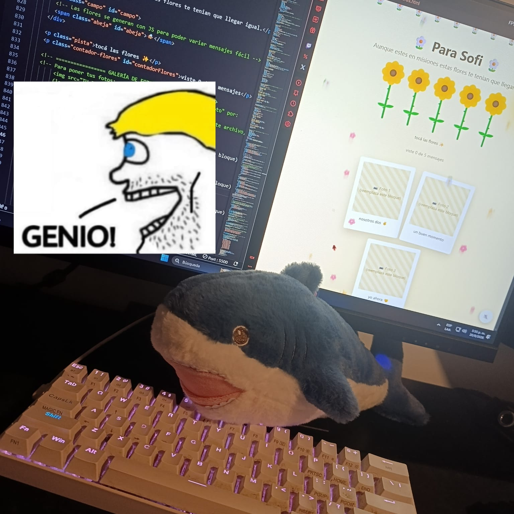
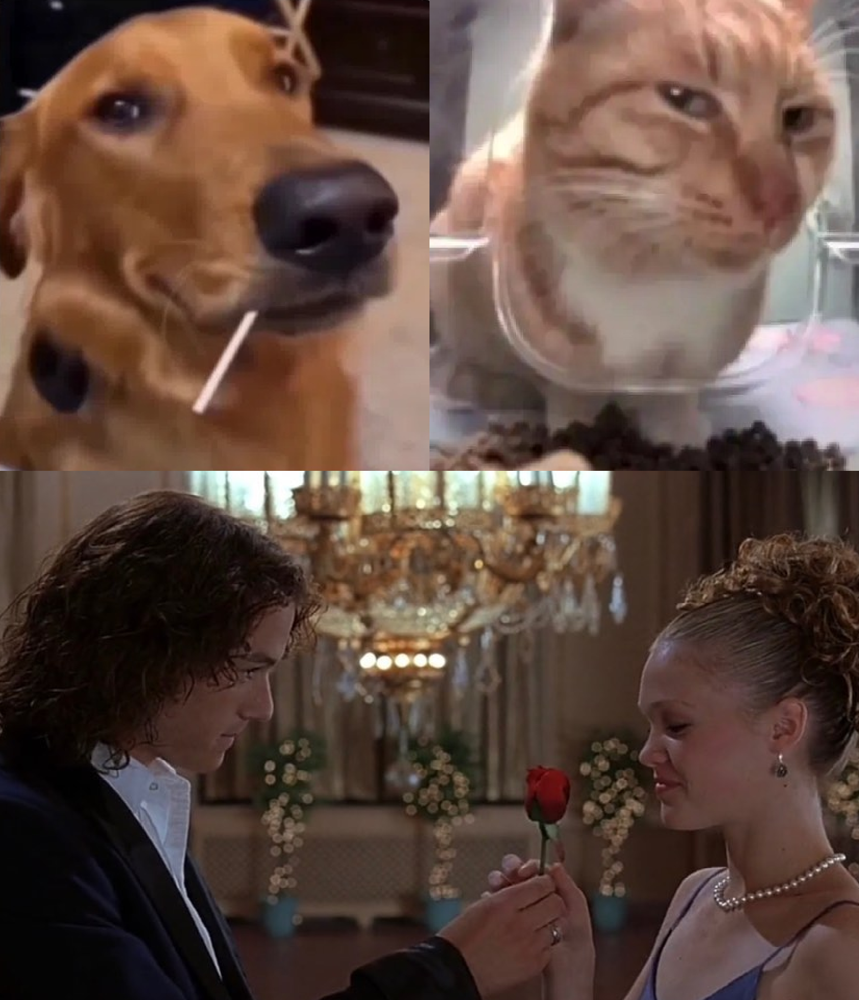

tocá para abrir 🌼
Aunque estés en Misiones, estas flores te tenían que llegar igual.
tocá las flores ✨
viste 0 de 3 mensajes
nosotros dos ✌️🕴️

te espera este GENIO! 🦈

💛Us💛
Vos sabías que yo sabía que algún día pasaría. Por esto te pregunté tu modelo y por esto estaba "misterioso". La distancia temporal no va a impedir que este detalle te llegue. ¿Viste que yo escribo palabras rápido? Bueno. Cada vez que en la página me sale: "Libro", "Leer", "Escribir", "Ojos", "Ella". Me acuerdo de vos al instante y flaqueo. No me quejo. Ya te extraño, y eso que todavía queda esperar. Quiero que vuelvas rápido para volverte a abrazar. Quiero darte el ramo y a Sharkcy. Quiero que me prestes el resto de la saga. Quiero que salgamos más seguido. Quiero que me hables de mitología griega. Quiero muchas cosas más, que no van a entrar acá. Espero que este detalle te guste, No va a ser el último, te lo prometo. Para Sofi.
— con amor, Tony <3